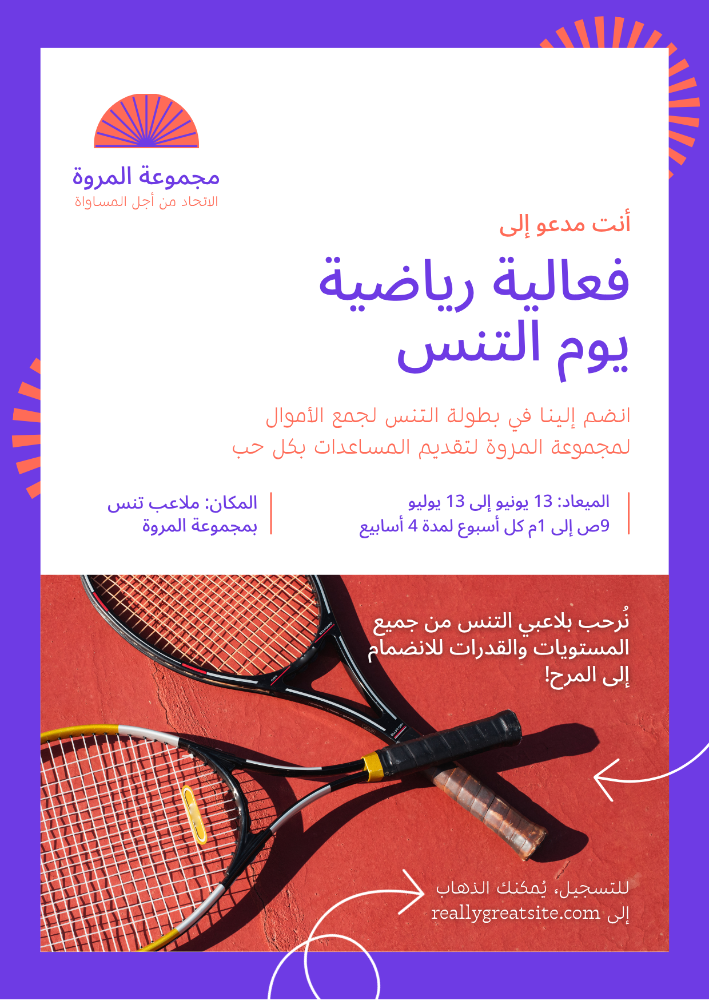
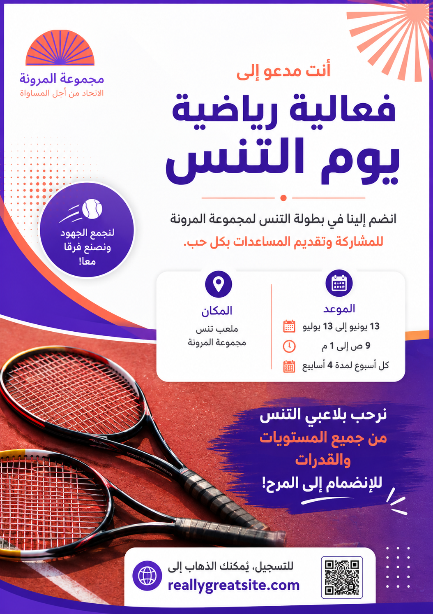

تحسين محتوى صورة باستخدام ChatGPT
من صورة إعلانية خام → تحليل المحتوى → تحسين النص → تصور بصري أكثر احترافية
ChatGPT
Poster لفعالية رياضية
نص محسّن + تحسينات تصميمية
Prompt • Before/After • النتيجة
🎯 الهدف من التاسك
تحليل محتوى الصورة المرفقة، استخراج النص، تحسينه لغويًا وتسويقيًا، ثم تنظيم المعلومات واقتراح تحسينات تجعل الـPoster أكثر وضوحًا وجاذبية مع الحفاظ على فكرته الأساسية.
🔄 Before / After
① الصورة الأصلية

② النسخة المحسّنة

🧠 الـPrompt المستخدم
حلل الصورة المرفقة باعتبارها Poster إعلاني لفعالية رياضية. استخرج النص الموجود بها، ثم حسّن المحتوى من الناحية اللغوية والتسويقية، وصحح أي أخطاء، واجعل النص أكثر احترافية ووضوحًا وجاذبية، مع الحفاظ على نفس فكرة الإعلان ومعلوماته الأساسية. اقترح أيضًا تحسينات على ترتيب النصوص والعناوين داخل التصميم. اعرض النص الأصلي، ثم النص المحسن، ثم اذكر أهم التحسينات التي أجريتها.📝 النص قبل التحسين
• مجموعة المرونة — الاتحاد من أجل المساواة.
• أنت مدعو إلى فعالية رياضية: يوم التنس.
• انضم إلينا في بطولة التنس لجمع الأموال لمجموعة المرونة لتقديم المساعدات بكل حب.
• الميعاد: 13 يونيو إلى 13 يوليو، من 9 ص إلى 1 م، كل أسبوع لمدة 4 أسابيع.
• المكان: ملعب تنس بمجموعة المرونة.
• نرحب بلاعبي التنس من جميع المستويات والقدرات للانضمام إلى المرح.
• للتسجيل: reallygreatsite.com
✨ النص بعد التحسين
أنت مدعو إلى
فعالية رياضية — يوم التنس
انضم إلينا في بطولة التنس لمجموعة المرونة للمشاركة وتقديم المساعدات بكل حب.
الموعد: 13 يونيو إلى 13 يوليو — من 9 ص إلى 1 م — كل أسبوع لمدة 4 أسابيع.
المكان: ملعب تنس مجموعة المرونة.
نرحب بلاعبي التنس من جميع المستويات والقدرات للانضمام إلى المرح!
التسجيل: reallygreatsite.com
🚀 أهم التحسينات
📌 الخلاصة
تم استخدام ChatGPT كأداة تحليل وتحسين: صورة → استخراج المحتوى → تحسين الصياغة → تنظيم المعلومات → اقتراح تحسينات → نتيجة نهائية.